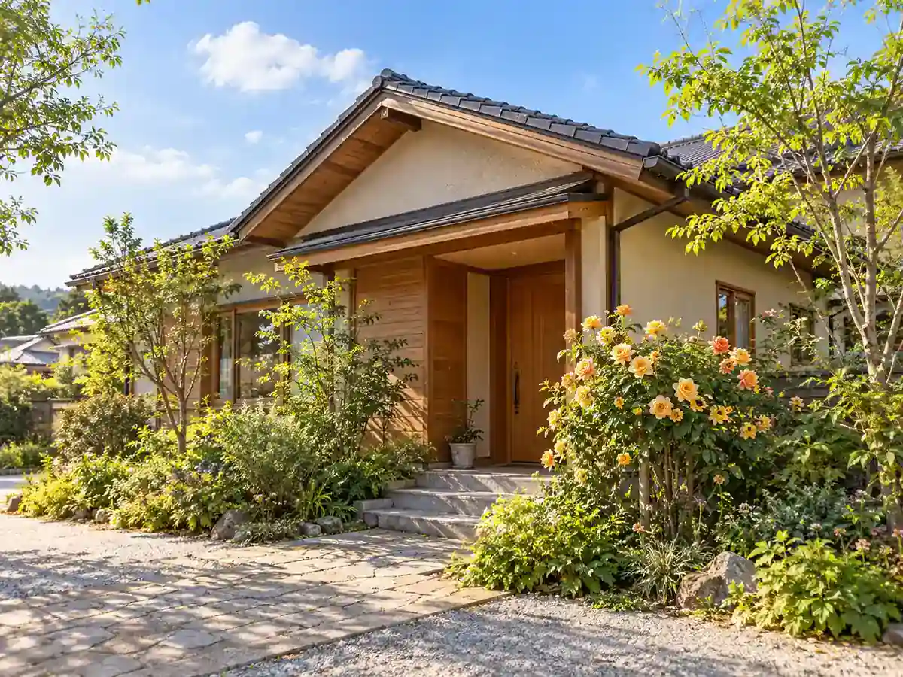

CONCEPT
名前が、お店の
成り立ちそのものです
食堂カフェ ノルンは、秋田市雄和下黒瀬にあります。 一見すると民家のような外観で、お店の前の看板が目印です。
ノルン ＝ 北欧神話の女神の姉妹
ご夫婦とその姉妹が中心になって営んでいることから、北欧神話に登場する女神の姉妹の名前がつけられました。
お店をつくったのは、建設業を本業とする佐善建設です。 この地域には飲食店がありませんでした。そこで空き家を改装し、 2022年1月にプレ営業、4月28日に本オープンしました。
この地域には飲食店がなかったので、地域の交流も増えて元気になればと思ってオープンしました。 ABS秋田放送「ラジパル日記」（2023年3月2日）に掲載された、代表の言葉より
家族の名前と、地域のための店。この二つが、はじめから重なっているお店です。
